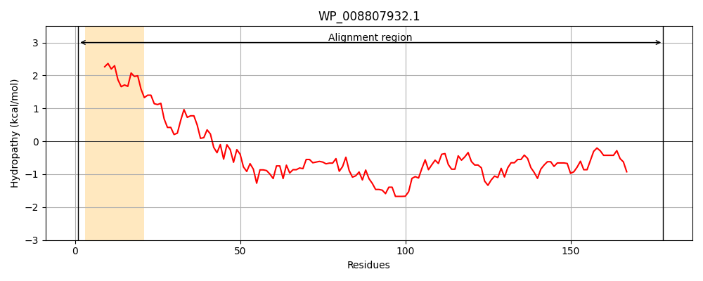
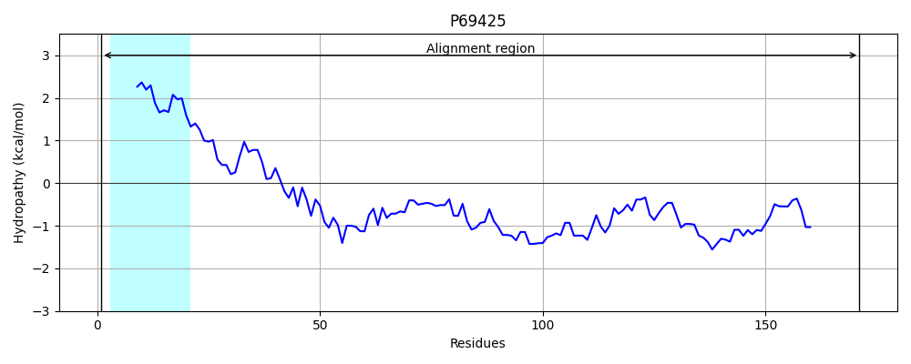
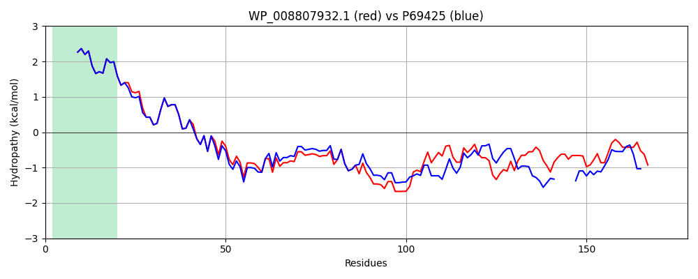

Hit Accession: P69425
Hit TCID: 2.A.64.1.1
Hit Description: gnl|BL_ORD_ID|11263 gnl|TC-DB|P69425|2.A.64.1.1 Sec-independent protein translocase protein tatB - Escherichia coli.
Mach Len: 178
e:0.000000
Query TMS Count : 1
Hit TMS Count: 1
TMS-Overlap Score: 0.950000
Predicted Substrates:None
BLAST Alignment:
Score: 614 , Bit scores: 241 bits, E-value: 1.5e-82, Alignment length: 178, Percentage identity: 74
Query: 1 MFDIGFSELLLVFVIGLIVLGPQRLPVAVKTVVGWIRTLRSLATTVQNELAQELKLQEFQESLKKVEKASLNNLTPELKASMDELREAAESMKRSYSAHDPEKASDEANTILNPVVKGSEAQRQDVTPATAEHQASAPAHAPDPVADEQPASPAELPAEKTSATAAAPHSSPASSDKP 178
MFDIGFSELLLVF+IGL+VLGPQRLPVAVKTV GWIR LRSLATTVQNEL QELKLQEFQ+SLKKVEKASL NLTPELKASMDELR+AAESMKRSY A+DPEKASDEA+TI NPVVK +EA + VTPA A+ QAS+P P E P PA AAP SP+SSDKP
Sbjct: 1 MFDIGFSELLLVFIIGLVVLGPQRLPVAVKTVAGWIRALRSLATTVQNELTQELKLQEFQDSLKKVEKASLTNLTPELKASMDELRQAAESMKRSYVANDPEKASDEAHTIHNPVVKDNEAAHEGVTPAAAQTQASSPEQKP-----ETTPEPVVKPAADAEPKTAAP--SPSSSDKP 171 | Protein Hydropathy Plots: |
|---|
|  |  |
Pairwise Alignment-Hydropathy Plot:
|
|---|
|  |